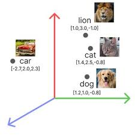
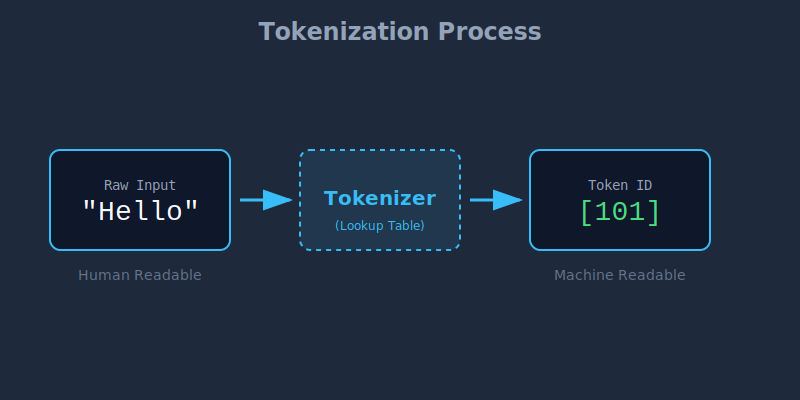
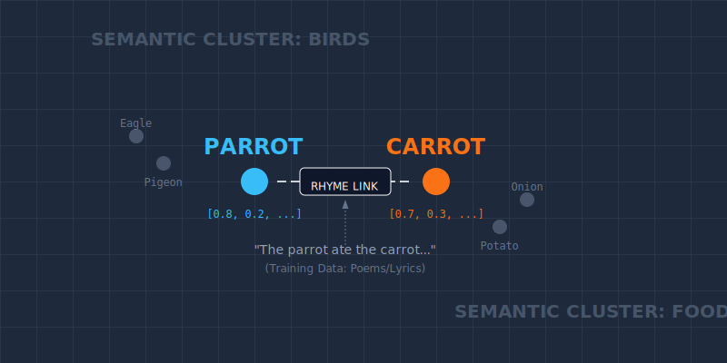
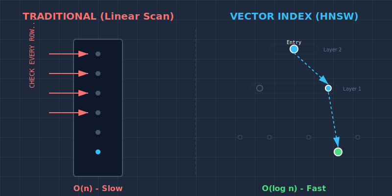

Modern AI Architecture
From Embeddings to Chatbots
Created by Chelcea Calin
1 / 25
Agenda
- What are Embeddings?
- What are Tokens?
- Embeddings vs. Tokens (The Context Gap)
- Common Misconceptions (The Parrot/Carrot Fun Fact)
- Vector Databases
- Vector DB vs. Traditional SQL
- The Problem with LLMs
- RAG: The Solution
- RAG Architecture
- Live Demo & Chatbot Deep Dive
2 / 25
What are Embeddings?
Embeddings are the fundamental building blocks of modern NLP.
-
Definition: Numerical representations for words,
letters, symbols, or images.
-
Structure: They are typically
continuous (can take any real number),
dense vectors (likely not zero), and serve as a
compressed notation to represent data.
-
The Goal: To capture
semantic meaning.
# Conceptual Representation cat = [0.2, -0.4, 0.9, ...] dog = [0.2,
-0.3, 0.8, ...]

3 / 25
What are Tokens?
Before we get embeddings, we need Tokens. A computer cannot "read"
text; it can only process numbers.
-
Definition: The process of breaking down text into
smaller units (tokens) and assigning them a static numeric ID.
-
Words vs. Tokens: A token is not always a word.
- Common words ("Apple") = 1 Token.
-
Complex words ("Unfriendliness") = Multiple Tokens ("Un",
"friend", "li", "ness").

4 / 25
Embeddings vs. Tokens
The Context Problem: If "Bank" is always token #405,
how does the model know the difference between a river bank and a
financial bank?
The Process:
-
Each word gets converted into a token (Static ID).
-
Tokens get converted into initial embeddings.
-
The Magic: Through a mechanism called
Self-Attention, the model looks at the whole
proposition.
-
It updates the embedding to reflect its meaning
in that specific phrase.
Key Takeaway: Tokens are just dictionary lookups.
Embeddings are dynamic, context-aware representations.
5 / 25
Misconceptions about Embeddings
We often think embeddings capture "truth," but they actually capture
usage patterns.
Fun Fact: Parrot vs. Carrot
In vector space, words like parrot and
carrot are often found quite close together.
-
Why? Embedding models are trained on vast amounts
of data, including poems, songs, and nursery rhymes.
-
The "Rhyme" Effect: Because they rhyme, they appear
in similar sentence structures (positionally similar).

6 / 25
Vector Databases
Where do we store millions of these vector lists? Standard databases
aren't built for this.
-
Definition: Specialized databases designed to
store, index, and query high-dimensional vectors.
-
How they work: They use indexing algorithms to
create a map of the data.
-
Scalability: FAISS (In-memory, Fast) vs ChromaDB
(Storage, Filtering).
How HNSW Works (The Algorithm):
Think of it like a highway system.
•
Top Layers: Express highways with few exits
(nodes).
•
Bottom Layers: Local roads for
fine-grained searching.
▶ Watch Video Explanation (HNSW)
7 / 25
Vector DB vs. Traditional DB
Why are they faster than just storing embeddings in a string column in
SQL?
In a traditional DB, finding "similar" items would require comparing
your query to every single row (Full Table Scan).

| Traditional SQL |
Vector DB |
| Exact keyword matching |
Semantic similarity |
| Scans rows (O(n) complexity) |
Traverses Index Graph (O(log n) complexity)
|
8 / 25
The Problem with LLMs
Large Language Models like GPT-4 are powerful, but they have three
major weaknesses when deployed in business:
-
1. The Knowledge Cut-off: They are frozen in time.
-
2. No Private Knowledge: They don't have access to
your internal database.
-
3. Hallucinations: They often confidently invent
facts when unsure.
User: "What is my mother's name?"
ChatGPT: "I don't know who you are."
9 / 25
RAG: Retrieval-Augmented Generation
To fix these problems, we don't need a bigger brain; we need a
better library.
The Concept
Without RAG (Closed Book Exam): The student (LLM)
must answer purely from memory.
With RAG (Open Book Exam): The student (LLM) is
allowed to go to the library, find the relevant textbook page
(Retrieval), and use that specific information.
RAG = Search Engine Accuracy + LLM Creativity.
10 / 25
How RAG Works (The Pipeline)
How do we technically implement this "Open Book" strategy?
Step 1: Indexing (Preparation)
- Break documents into small chunks.
- Convert chunks to vectors and store in Vector DB.
Step 2: Retrieval (The Search)
- User asks: "Tell me about cat speed."
- System searches Vector DB for chunks about "cat speed".
Step 3: Generation (The Answer)
- We paste the retrieved text into the prompt context.
- LLM generates a factual response.
11 / 25
2D Representation Demo
We use dimensionality reduction (PCA/t-SNE) to visualize these complex
vectors on a 2D screen.
12 / 25
RAG Challenges in Production
Building a prototype is easy. Production is hard.
-
1. Handling Unstructured Data (ETL):
Garbage In, Garbage Out. Extracting clean text from PDFs, complex
tables, and messy HTML is 80% of the work.
-
2. Data Freshness (The Sync Problem):
If you update a SQL row, the Vector DB becomes "stale".
Solution: Cron Jobs or CDC (Change
Data Capture) pipelines to re-embed data daily/hourly.
-
3. Query Routing:
Does the user need "Technical Support" or "Sales Info"? We need a
semantic router (Classifier) to pick the right index.
-
4. Memory & Context:
Balancing "Chat History" vs. "Retrieved Documents" within the token
limit.
The "Lost in the Middle" Phenomenon:
LLMs tend to focus on the beginning and end of the context window. If
the answer is buried in the middle of 10 retrieved documents, the
model might miss it.
13 / 25
Phase 2: The Chatbot
Deep dive into system logic, storage strategies, and routing.
14 / 26
1. Storage & Retrieval Strategy
We use a hybrid approach to balance speed and data integrity.
-
Vector Store (FAISS): We use
all-MiniLM-L6-v2 for embeddings.
-
Fast Retrieval Maps: To ensure O(1) access times,
we maintain two in-memory hashmaps:
-
The ID Hash: A deterministic signature:
hash(folder_name + filename + sheet_name)
-
Data Source: We do not store the
actual file content in FAISS. We store metadata pointers. The source
of truth is always MinIO.
Tech Stack: Python, Flask, SentenceTransformers,
FAISS.
15 / 26
2. Live Logic Trace
How the system "reads" the file structure before answering.
{
"unique_id": "4f257...db",
"filename": "Risk_Summary_Global_Q3.xlsx",
"sheet_name": "All Risks - Regions",
"columns": [
"0: Risk Group",
"1: Net Total (USD)",
"2: Gross Total (USD)"
],
"sheet_summary": "Financial risk summary focusing on market exposure.
Identifies significant risk categories...",
"is_complex": true,
"minio_url": "s3://secure-vault/risk-reports/2025/summary.xlsx"
}
Step 1: Input Analysis
User asks: "What is the Net Total risk?"
Step 2: Vector Match
System matches "Net Total" column in JSON to user query.
Step 3: Routing
Intent: CONTENT_RETRIEVAL
(System pulls file from MinIO URL)
16 / 26
3. Data Hydration & LLM Handoff
We retrieve based on a similarity search on the file
SUMMARY, not just keywords.
-
Search: Find top matches in FAISS based on summary
vectors.
-
Fetch: Use the stored URL to pull the binary from
MinIO.
-
Parse: Clean the Excel/PDF (remove empty
rows/cols).
-
Format: Convert the clean data into
Markdown.
-
Handoff: Pass the Markdown + User Query + Expanded
Metadata to the LLM for final answer generation.
17 / 26
4. Intelligent Router (The Intent)
Every user message is categorized into one of 5 specific intents:
🔵 Content: Excel parsing & Vector Search (RAG).
🟡 MinIO: File operations. Has 2 sub-intents:
• Predefined: Uses standard
functions (List/Check).
•
Dynamic: LLM generates code based on available functions.
🟢 SQL: Database query generation.
🟣 History: Exit early. Answer purely from
conversation memory.
🔴 Breach_Attempt: Exit early. User asked an unsafe
query.
18 / 26
5. Memory & Query Rewriting
We maintain a dedicated memory store for each user session. This
bridge allows the system to understand context, pronouns, and intent
shifts just like a human would.
Scenario 1: SQL Parameter Update
User: "Show me the latest 5
reports." ➔
System executes SQL (LIMIT 5)
User: "Actually, I want the top
10."
Internal Logic: The LLM sees the
previous SQL, detects the intent to change the quantity, modifies
LIMIT 5 to LIMIT 10, and re-executes.
Scenario 2: Semantic Disambiguation
User: "What is the exposure for
the Q3 Risk Report?"
User: "Who approved
it?"
Rewritten Query: "Who approved
the Q3 Risk Report?"
(This rewritten query is sent to FAISS, ensuring we find the
approver for the correct report.)
The Benefit: This decoupling means our Vector
Database and SQL engine never have to guess. They always receive
complete, standalone instructions.
19 / 26
6. Index Manager & Scheduler
Ensuring consistency between MinIO and FAISS.
ID = hash(folder + "_" + file + "_" + sheet)
-
Scheduler: Runs every 30 mins to scan the bucket.
-
Validation: Checks
last_modified date
against the index.
-
Update Logic: If the date differs OR the ID is new,
we re-process. Otherwise, we skip to save resources.
20 / 26
7. Response Transparency
The response object contains critical metadata for user trust.
Answer: "The total risk is $45M..."
📂 Sources: Risk_Report_Q3.xlsx [Match Probability:
92%]
📝 User Query: "Total risk?"
🧠 Refined Query: "Calculate total net risk for Q3
reports"
💻 Code: [View Snippet]
⏱️ Time: 1.2s
21 / 26
8. Security Guardrails
Paranoid security measures for code execution.
-
Namespace Execution: Python runs in a restricted
scope. No access to globals/OS.
-
Restricted Python Built-ins: `os.system`,
`subprocess`, `open(write)` are strictly blocked.
-
SQL Restrictions:
- User has
SELECT only permissions.
-
Keywords like
DROP, TRUNCATE,
ALTER are blocked at the prompt injection level.
22 / 26
9. System Benefits
Why this architecture works for Enterprise:
Flexibility:
LLM Factory allows swapping
models (GPT-4, Claude) seamlessly.
Accuracy:
Scheduler ensures we never answer
from stale files.
Safety:
Router blocks malicious queries before
DB access.
Auditability:
Full transparency on queries
rewritten and code executed.
23 / 26
Q & A
Thank you for listening.
24 / 26
End of Presentation
25 / 26